Canciones destacadas
Dream On
1973
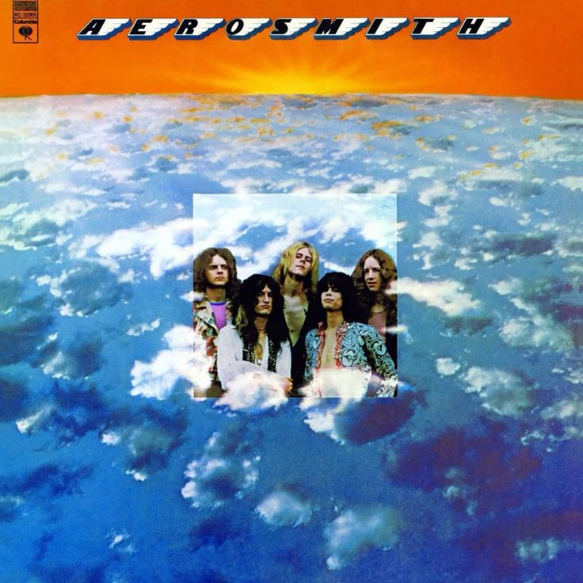
Crazy
1993
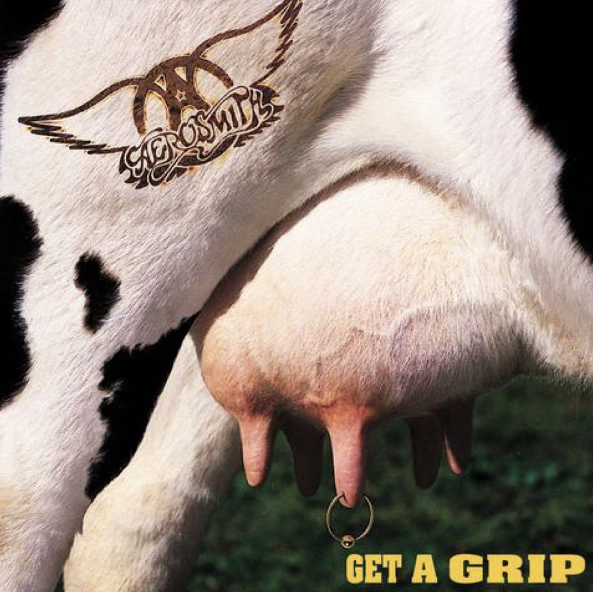
Crying
1993
Walk This Way
1975
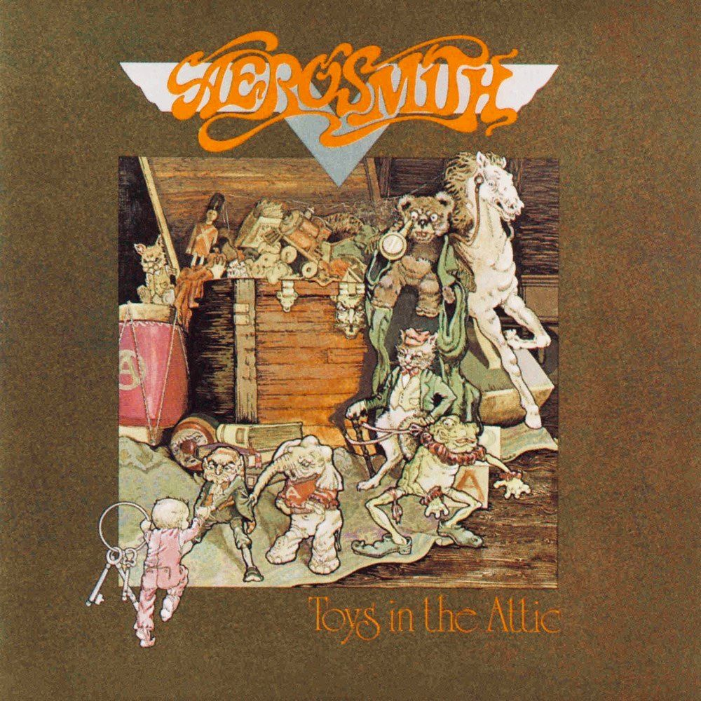
 @aerosmith
@aerosmith
Boston Bad Boys
Conocidos como los "Chicos Malos de Boston", Aerosmith no es solo una banda; es una fuerza de la naturaleza que ha definido el rock and roll estadounidense desde 1970. Liderados por la inconfundible voz de Steven Tyler y la guitarra incendiaria de Joe Perry, junto a la maestría de Brad Whitford, Tom Hamilton y Joey Kramer, crearon una alquimia perfecta entre el hard rock crudo, el blues y melodías pop contagiosas. Durante los años 70, tocaron el cielo con obras maestras como "Toys in the Attic" y "Rocks", regalándonos himnos eternos como "Walk This Way" y "Sweet Emotion". Pero su historia es también una de supervivencia: tras caer en el abismo de los excesos, protagonizaron uno de los regresos más espectaculares en la historia de la música durante los años 80. Hoy, con múltiples premios Grammy y millones de discos vendidos, Aerosmith se mantiene como una leyenda viva, demostrando que el verdadero rock and roll nunca muere.
Estados Unidos
Aerosmith nació en un entorno urbano donde el rock se vivía con crudeza y ambición. Boston ofrecía una escena exigente, marcada por el blues eléctrico y la herencia del rock británico. En ese contexto, la banda comenzó a forjar una identidad sonora directa y sin concesiones.
Los primeros ensayos estuvieron dominados por una búsqueda constante de química y cohesión. La prioridad no era la perfección técnica, sino la intensidad y la actitud. Ese enfoque les permitió construir un sonido reconocible desde el inicio.
Las actuaciones en pequeños clubes funcionaron como un campo de pruebas permanente. Cada concierto servía para ajustar dinámicas internas y fortalecer la presencia escénica. El contacto cercano con el público fue clave para afianzar confianza.
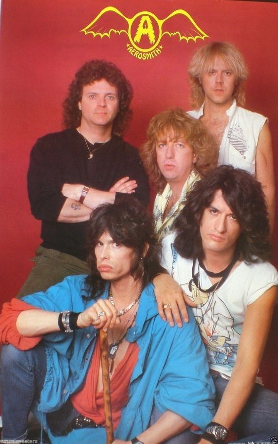
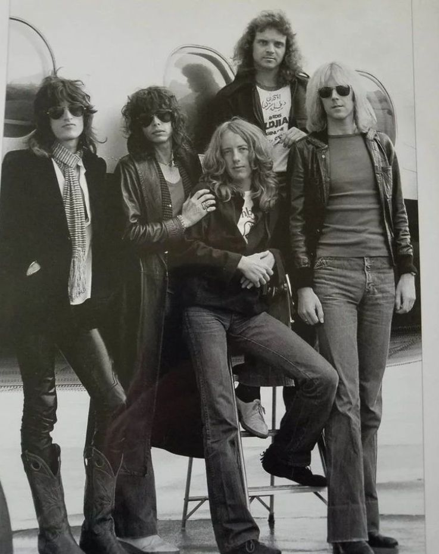
Estados Unidos
Nueva York apareció pronto como un escenario estratégico para crecer. La ciudad imponía un ritmo competitivo y una audiencia más crítica. Aerosmith supo responder con un directo potente y una imagen clara.
Las primeras grabaciones reflejaron un grupo aún en formación, pero con carácter definido. Las canciones transmitían urgencia, ambición y una fuerte influencia del rock clásico estadounidense. No había artificios innecesarios.
Esta etapa sentó los cimientos de toda su carrera posterior. Fue un periodo de consolidación, aprendizaje y resistencia. Sin este inicio sólido, nada de lo que vendría después habría sido posible.
Reino Unido
Durante este periodo, la banda dio un salto decisivo en proyección y ambición artística. El contacto con nuevas escenas internacionales amplió su perspectiva creativa. El sonido comenzó a ganar peso y seguridad sin perder su raíz bluesera.
Londres ofreció un entorno cargado de tradición rock y exigencia crítica. Actuar allí implicaba medirse con una historia musical imponente. Aerosmith respondió con una propuesta intensa y segura, capaz de sostenerse en cualquier escenario.
La experiencia europea influyó en la estructura de las composiciones. Las canciones mostraron mayor control rítmico y un uso más consciente de los contrastes dinámicos. La banda aprendió a dosificar energía sin perder impacto.
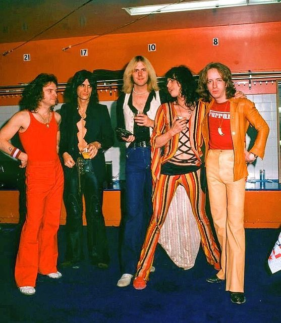
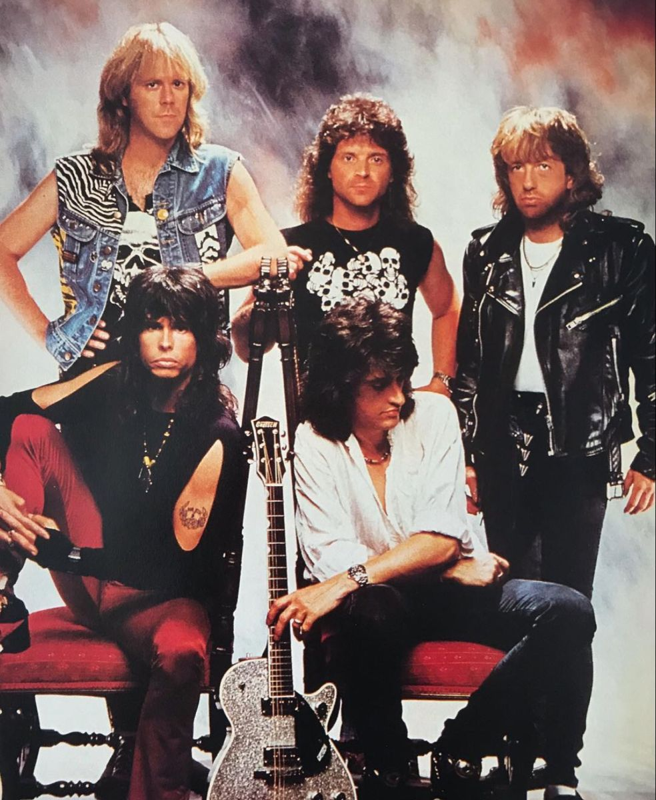
Canadá
Toronto representó un punto clave en su consolidación norteamericana fuera de Estados Unidos. El público canadiense respondió con entusiasmo y fidelidad. Esa conexión reforzó la confianza del grupo en su alcance internacional.
Las actuaciones en estos territorios fortalecieron su disciplina escénica. El directo se volvió más preciso, sin perder visceralidad. Cada concierto contribuía a una identidad más sólida y profesional.
Esta etapa confirmó que Aerosmith podía trascender fronteras sin diluir su esencia. El grupo dejó claro que su lenguaje musical era universal y adaptable. Fue un paso firme hacia una madurez mayor.
Japón
Durante este periodo, Aerosmith alcanzó una dimensión internacional que confirmó su condición de banda global. El éxito acumulado en años anteriores permitió que su música llegara a públicos culturalmente muy distintos. Esta expansión no fue superficial, sino sostenida por una identidad sonora reconocible. La banda proyectaba seguridad y ambición en cada aparición pública.
Tokio se convirtió en un escenario decisivo para medir su impacto fuera del eje occidental. El público japonés respondió con una atención meticulosa, valorando tanto la ejecución técnica como la entrega escénica. Cada concierto reforzaba la percepción de profesionalismo y solidez artística. La recepción confirmó que su lenguaje musical trascendía barreras culturales.
La experiencia asiática influyó directamente en la forma de concebir los conciertos. Aerosmith comenzó a mostrar un mayor control sobre tempos, dinámicas y puesta en escena. La intensidad seguía presente, pero ahora estaba mejor administrada. Este equilibrio elevó la calidad general de sus actuaciones.
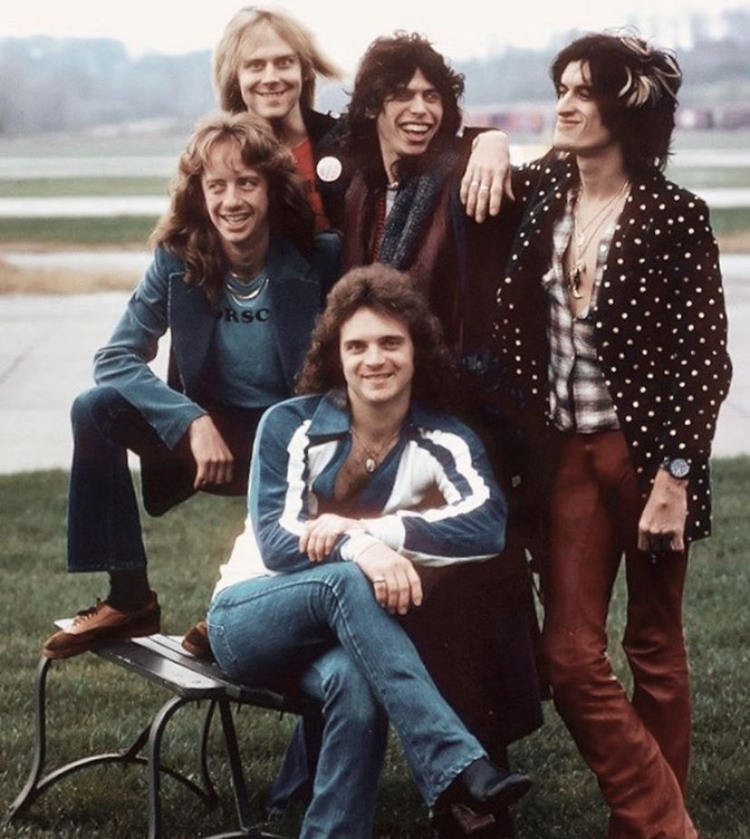
Australia
Sídney representó la consolidación del grupo en el hemisferio sur. Australia ofrecía un público apasionado y directo, profundamente conectado con el hard rock. La respuesta emocional fue inmediata y contundente. La banda encontró allí una conexión genuina y duradera.
Las giras por estos territorios fueron largas y físicamente exigentes. El ritmo constante de viajes, conciertos y compromisos promocionales empezó a generar desgaste interno. La presión del éxito se hizo cada vez más evidente. Aun así, el nivel artístico se mantuvo alto sobre el escenario.
Esta etapa cerró una fase de crecimiento imparable en la carrera del grupo. El reconocimiento global alcanzó su punto más alto hasta entonces. Al mismo tiempo, comenzaron a aparecer las primeras señales de saturación. El precio de la cima empezaba a manifestarse con claridad.
Alemania
A comienzos de los años ochenta, Aerosmith entró en una etapa marcada por la inestabilidad interna. El desgaste acumulado de giras y excesos comenzó a afectar la cohesión del grupo. La creatividad seguía presente, pero aparecía de forma irregular y fragmentada.
Múnich representó un periodo de distanciamiento del foco principal de la industria estadounidense. El entorno europeo ofrecía una sensación de aislamiento que permitía reflexionar sin tanta presión mediática. Sin embargo, esa distancia no resolvía los conflictos de fondo.
Las grabaciones realizadas durante este tiempo reflejaron una banda dividida en lo creativo y lo personal. Algunas canciones mantenían la fuerza histórica del grupo.
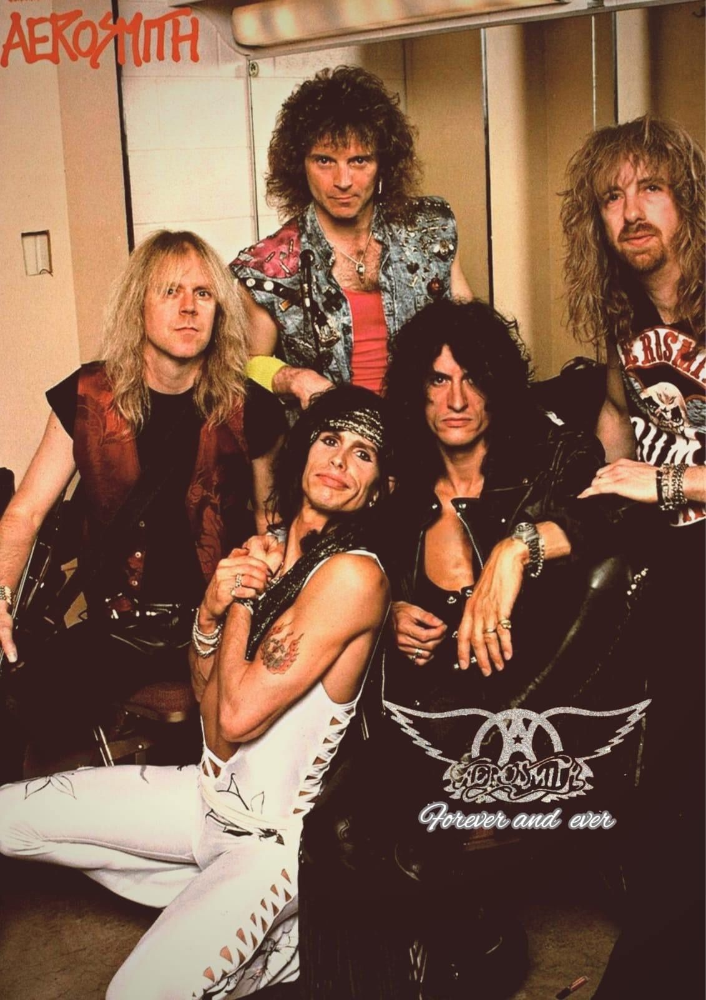
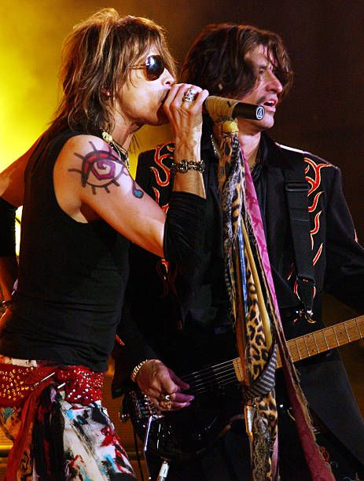
Suecia
Estocolmo simbolizó un intento consciente de recuperar disciplina y control. El contexto más sobrio favoreció una dinámica de trabajo distinta y más estructurada. La intención era reencontrar estabilidad sin renunciar a la identidad original.
Las actuaciones en directo comenzaron a mostrar señales de irregularidad. La energía seguía existiendo, pero no siempre se traducía en solidez escénica constante. El público percibía esa falta de cohesión progresiva.
Esta etapa funcionó como un punto de quiebre necesario en la carrera de la banda. Tocaron fondo sin desaparecer completamente del panorama musical. Ese descenso sería clave para la reconstrucción posterior.
Irlanda
A mediados de los ochenta, Aerosmith inició una reconstrucción consciente para sanar su desgaste interno tras años de excesos. La banda reorganizó su dinámica creativa y redefinió sus prioridades, marcando el inicio de un renacimiento sólido y vital. Este proceso crucial sentó las bases firmes para una recuperación artística que sería sostenida en el tiempo.
Dublín sirvió como una prueba de fuego decisiva ante una escena europea exigente y muy atenta a la calidad del directo. La vibrante respuesta del público confirmó que su relevancia trascendía las fronteras estadounidenses, validando su estatus internacional. Esta validación externa fue el combustible necesario para reforzar la confianza artística y la moral del grupo.
Sus nuevas composiciones revelaron una claridad estructural ausente en años anteriores, mostrando un enfoque mucho más lúcido y profesional. Las letras se tornaron directas y el sonido logró un equilibrio perfecto entre su vasta experiencia y una energía renovada. Fue esta mezcla de ambición comercial y crudeza rockera la que revitalizó totalmente su propuesta sonora.
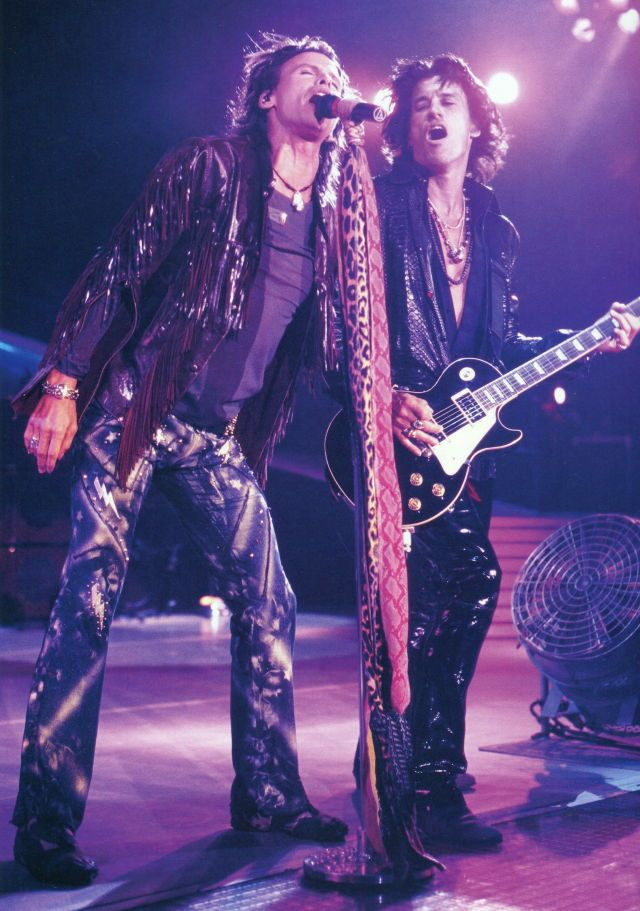
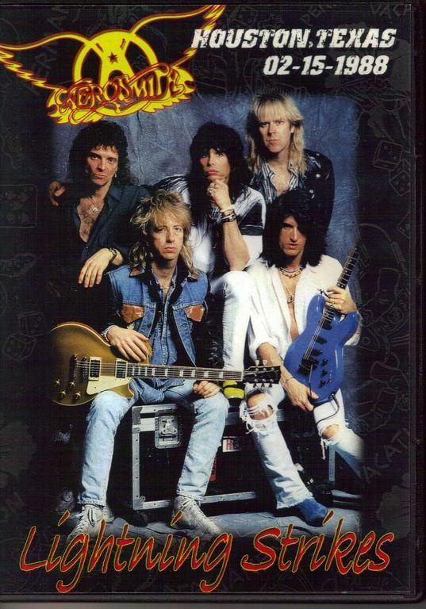
Brasil
Río de Janeiro simbolizó su explosiva expansión hacia las audiencias masivas y apasionadas de toda América Latina. Los conciertos destacaron por una intensidad emocional arrolladora y una conexión casi espiritual que electrificó a los asistentes. Allí, Aerosmith reafirmó su inmenso poder global para movilizar multitudes en contextos culturales diversos y lejanos.
El éxito comercial acompañó esta etapa de forma progresiva, devolviéndolos merecidamente a la cima de las listas de ventas. La banda recuperó su dominio en los medios y circuitos internacionales, consolidando su estatus de leyendas vivientes. El relato épico de su regreso fortaleció su imagen pública, convirtiéndolos en los grandes supervivientes del rock.
Esta etapa redefinió para siempre el lugar de Aerosmith en el vasto panorama de la historia musical moderna. Demostraron al mundo que la reinvención radical era posible sin sacrificar ni un solo ápice de su identidad original. Así, el camino hacia su consolidación definitiva quedó establecido, asegurando su legado para las décadas futuras.
Francia
Durante los noventa, Aerosmith se consagró como un fenómeno intergeneracional capaz de navegar con maestría los cambios drásticos de la industria musical. Su habilidad para adaptarse a las nuevas tendencias sin sacrificar su esencia transformó su experiencia en una ventaja creativa letal. Lograron mantenerse vigentes y creíbles mientras el panorama sonoro se transformaba radicalmente.
París representó la conquista definitiva del circuito europeo, otorgándoles una validación cultural donde el prestigio artístico pesaba tanto como el éxito comercial. En este entorno exigente, la banda se desenvolvió con una autoridad y madurez indiscutibles ante la crítica del viejo continente. Fue la confirmación de que su impacto trascendía el rock para convertirse en íconos culturales.
Las producciones de esta era exhibieron un sonido mucho más pulido y accesible, dominando los códigos del mainstream sin convertirse en esclavos de la industria. Cada lanzamiento no solo escalaba las listas, sino que reforzaba su dominio global con una maestría técnica impecable. Encontraron el punto exacto donde la innovación moderna potenciaba su estilo clásico.
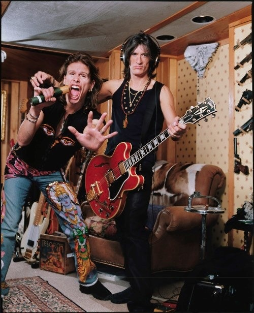
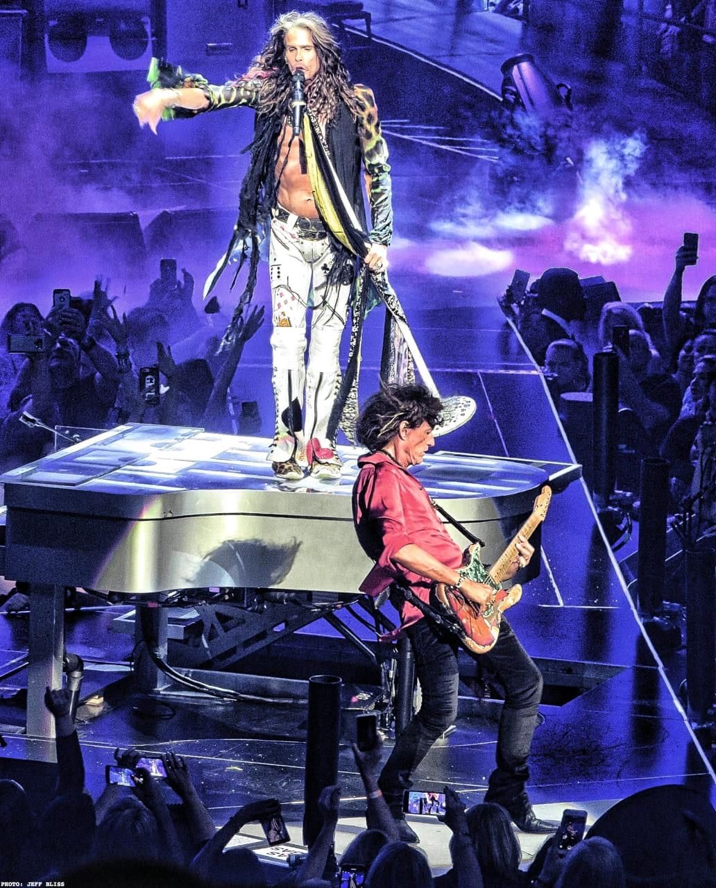
España
Madrid simbolizó la conexión visceral con el sur de Europa, desatando una energía inigualable ante audiencias masivas totalmente entregadas a su propuesta. Los conciertos destacaron por una intensidad eléctrica y una comunión ruidosa que se mantuvo constante y ferviente durante años. La capital española demostró que la pasión por la banda no conocía barreras lingüísticas.
Las giras mundiales se diseñaron como experiencias inmersivas, donde el gran espectáculo visual se integró perfectamente como una extensión vital de su discurso. Ejecutaron cada presentación con precisión milimétrica, confirmando su vigencia escénica noche tras noche ante estadios repletos. Aerosmith elevó el estándar del show en vivo, mezclando teatralidad con pura potencia musical.
Esta década cerró su ciclo histórico, asegurando su lugar en el olimpo del rock gracias a una longevidad y coherencia envidiables en su género. El grupo selló su legado basándose en la calidad de su presente y no en la nostalgia del pasado. Así, entraron al nuevo milenio no como reliquias, sino como gigantes indiscutibles.



@aerosmith